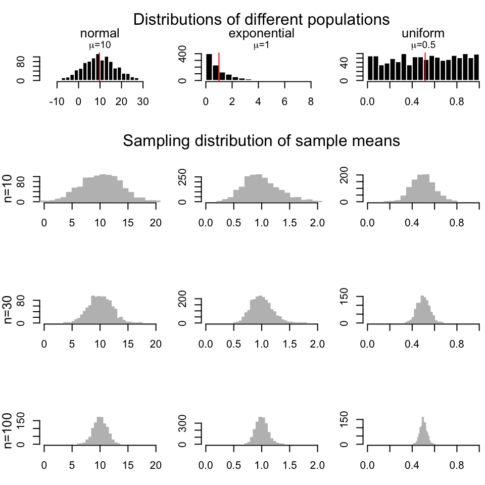

3 Statistics for Genomics
This chapter will summarize statistics methods frequently used in computational genomics. As these fields are continuously evolving, the techniques introduced here do not form an exhaustive list but mostly cornerstone methods that are often and still being used. In addition, we focused on giving intuitive and practical understanding of the methods with relevant examples from the field. If you want to dig deeper into statistics and math, beyond what is described here, we included appropriate references with annotation after each major section.
3.1 How to summarize collection of data points: The idea behind statistical distributions
In biology and many other fields, data is collected via experimentation. The nature of the experiments and natural variation in biology makes it impossible to get the same exact measurements every time you measure something. For example, if you are measuring gene expression values for a certain gene, say PAX6, and let’s assume you are measuring expression per sample and cell with any method (microarrays, rt-qPCR, etc.). You will not get the same expression value even if your samples are homogeneous, due to technical bias in experiments or natural variation in the samples. Instead, we would like to describe this collection of data some other way that represents the general properties of the data. Figure 3.1 shows a sample of 20 expression values from the PAX6 gene.

3.1.1 Describing the central tendency: Mean and median
As seen in Figure 3.1, the points from this sample are distributed around a central value and the histogram below the dot plot shows the number of points in each bin. Another observation is that there are some bins that have more points than others. If we want to summarize what we observe, we can try to represent the collection of data points with an expression value that is typical to get, something that represents the general tendency we observe on the dot plot and the histogram. This value is sometimes called the central value or central tendency, and there are different ways to calculate such a value. In Figure 3.1, we see that all the values are spread around 6.13 (red line), and that is indeed what we call the mean value of this sample of expression values. It can be calculated with the following formula \(\overline{X}=\sum_{i=1}^n x_i/n\), where \(x_i\) is the expression value of an experiment and \(n\) is the number of expression values obtained from the experiments. In R, the mean() function will calculate the mean of a provided vector of numbers. This is called a “sample mean”. In reality, there are many more than 20 possible PAX6 expression values (provided each cell is of the identical cell type and is in identical conditions). If we had the time and the funding to sample all cells and measure PAX6 expression we would get a collection of values that would be called, in statistics, a “population”. In our case, the population will look like the left hand side of the Figure 3.2. What we have done with our 20 data points is that we took a sample of PAX6 expression values from this population, and calculated the sample mean.

The mean of the population is calculated the same way but traditionally the Greek letter \(\mu\) is used to denote the population mean. Normally, we would not have access to the population and we will use the sample mean and other quantities derived from the sample to estimate the population properties. This is the basic idea behind statistical inference, which we will see in action in later sections as well. We estimate the population parameters from the sample parameters and there is some uncertainty associated with those estimates. We will be trying to assess those uncertainties and make decisions in the presence of those uncertainties.
We are not yet done with measuring central tendency. There are other ways to describe it, such as the median value. The mean can be affected by outliers easily. If certain values are very high or low compared to the bulk of the sample, this will shift mean toward those outliers. However, the median is not affected by outliers. It is simply the value in a distribution where half of the values are above and the other half are below. In R, the median() function will calculate the median of a provided vector of numbers.Let’s create a set of random numbers and calculate their mean and median using R.
#create 10 random numbers from uniform distribution
x=runif(10)
# calculate mean
mean(x)## [1] 0.3738963# calculate median
median(x)## [1] 0.32778963.1.2 Describing the spread: Measurements of variation
Another useful way to summarize a collection of data points is to measure how variable the values are. You can simply describe the range of the values, such as the minimum and maximum values. You can easily do that in R with the range() function. A more common way to calculate variation is by calculating something called “standard deviation” or the related quantity called “variance”. This is a quantity that shows how variable the values are. A value around zero indicates there is not much variation in the values of the data points, and a high value indicates high variation in the values. The variance is the squared distance of data points from the mean. Population variance is again a quantity we usually do not have access to and is simply calculated as follows \(\sigma^2=\sum_{i=1}^n \frac{(x_i-\mu)^2}{n}\), where \(\mu\) is the population mean, \(x_i\) is the \(i\)th data point in the population and \(n\) is the population size. However, when we only have access to a sample, this formulation is biased. That means that it underestimates the population variance, so we make a small adjustment when we calculate the sample variance, denoted as \(s^2\):
\[ \begin{aligned} s^2=\sum_{i=1}^n \frac{(x_i-\overline{X})^2}{n-1} && \text{ where $x_i$ is the ith data point and $\overline{X}$ is the sample mean.} \end{aligned} \]
The sample standard deviation is simply the square root of the sample variance, \(s=\sqrt{\sum_{i=1}^n \frac{(x_i-\overline{X})^2}{n-1}}\). The good thing about standard deviation is that it has the same unit as the mean so it is more intuitive.
We can calculate the sample standard deviation and variation with the sd() and var() functions in R. These functions take a vector of numeric values as input and calculate the desired quantities. Below we use those functions on a randomly generated vector of numbers.
x=rnorm(20,mean=6,sd=0.7)
var(x)## [1] 0.2531495sd(x)## [1] 0.5031397One potential problem with the variance is that it could be affected by outliers. The points that are too far away from the mean will have a large effect on the variance even though there might be few of them. A way to measure variance that could be less affected by outliers is looking at where the bulk of the distribution is. How do we define where the bulk is? One common way is to look at the difference between 75th percentile and 25th percentile, this effectively removes a lot of potential outliers which will be towards the edges of the range of values. This is called the interquartile range, and can be easily calculated using R via the IQR() function and the quantiles of a vector are calculated with the quantile() function.
Let us plot the boxplot for a random vector and also calculate IQR using R. In the boxplot (Figure 3.3), 25th and 75th percentiles are the edges of the box, and the median is marked with a thick line cutting through the box.
x=rnorm(20,mean=6,sd=0.7)
IQR(x)## [1] 0.5010954quantile(x)## 0% 25% 50% 75% 100%
## 5.437119 5.742895 5.860302 6.243991 6.558112boxplot(x,horizontal = T)
3.1.2.1 Frequently used statistical distributions
The distributions have parameters (such as mean and variance) that summarize them, but also they are functions that assign each outcome of a statistical experiment to its probability of occurrence. One distribution that you will frequently encounter is the normal distribution or Gaussian distribution. The normal distribution has a typical “bell-curve” shape and is characterized by mean and standard deviation. A set of data points that follow normal distribution will mostly be close to the mean but spread around it, controlled by the standard deviation parameter. That means that if we sample data points from a normal distribution, we are more likely to sample data points near the mean and sometimes away from the mean. The probability of an event occurring is higher if it is nearby the mean. The effect of the parameters for the normal distribution can be observed in the following plot.

The normal distribution is often denoted by \(\mathcal{N}(\mu,\,\sigma^2)\). When a random variable \(X\) is distributed normally with mean \(\mu\) and variance \(\sigma^2\), we write:
\[X\ \sim\ \mathcal{N}(\mu,\,\sigma^2)\]
The probability density function of the normal distribution with mean \(\mu\) and standard deviation \(\sigma\) is as follows:
\[P(x)=\frac{1}{\sigma\sqrt{2\pi} } \; e^{ -\frac{(x-\mu)^2}{2\sigma^2} } \]
The probability density function gives the probability of observing a value on a normal distribution defined by the \(\mu\) and \(\sigma\) parameters.
Oftentimes, we do not need the exact probability of a value, but we need the probability of observing a value larger or smaller than a critical value or reference point. For example, we might want to know the probability of \(X\) being smaller than or equal to -2 for a normal distribution with mean \(0\) and standard deviation \(2\): \(P(X <= -2 \; | \; \mu=0,\sigma=2)\). In this case, what we want is the area under the curve shaded in dark blue. To be able to do that, we need to integrate the probability density function but we will usually let software do that. Traditionally, one calculates a Z-score which is simply \((X-\mu)/\sigma=(-2-0)/2= -1\), and corresponds to how many standard deviations you are away from the mean. This is also called “standardization”, the corresponding value is distributed in “standard normal distribution” where \(\mathcal{N}(0,\,1)\). After calculating the Z-score, we can look up the area under the curve for the left and right sides of the Z-score in a table, but again, we use software for that. The tables are outdated when you can use a computer.
Below in Figure 3.5, we show the Z-score and the associated probabilities derived from the calculation above for \(P(X <= -2 \; | \; \mu=0,\sigma=2)\).

In R, the family of *norm functions (rnorm,dnorm,qnorm and pnorm) can be used to operate with the normal distribution, such as calculating probabilities and generating random numbers drawn from a normal distribution. We show some of those capabilities below.
# get the value of probability density function when X= -2,
# where mean=0 and sd=2
dnorm(-2, mean=0, sd=2)## [1] 0.1209854# get the probability of P(X =< -2) where mean=0 and sd=2
pnorm(-2, mean=0, sd=2)## [1] 0.1586553# get the probability of P(X > -2) where mean=0 and sd=2
pnorm(-2, mean=0, sd=2,lower.tail = FALSE)## [1] 0.8413447# get 5 random numbers from normal dist with mean=0 and sd=2
rnorm(5, mean=0 , sd=2)## [1] -1.8109030 -1.9220710 -0.5146717 0.8216728 -0.7900804# get y value corresponding to P(X > y) = 0.15 with mean=0 and sd=2
qnorm( 0.15, mean=0 , sd=2)## [1] -2.072867There are many other distribution functions in R that can be used the same way. You have to enter the distribution-specific parameters along with your critical value, quantiles, or number of random numbers depending on which function you are using in the family. We will list some of those functions below.
dbinomis for the binomial distribution. This distribution is usually used to model fractional data and binary data. Examples from genomics include methylation data.dpoisis used for the Poisson distribution anddnbinomis used for the negative binomial distribution. These distributions are used to model count data such as sequencing read counts.df(F distribution) anddchisq(Chi-Squared distribution) are used in relation to the distribution of variation. The F distribution is used to model
ratios of variation and Chi-Squared distribution is used to model distribution of variations. You will frequently encounter these in linear models and generalized linear models.
3.1.3 Precision of estimates: Confidence intervals
When we take a random sample from a population and compute a statistic, such as the mean, we are trying to approximate the mean of the population. How well this sample statistic estimates the population value will always be a concern. A confidence interval addresses this concern because it provides a range of values which will plausibly contain the population parameter of interest. Normally, we would not have access to a population. If we did, we would not have to estimate the population parameters and their precision.
When we do not have access to the population, one way to estimate intervals is to repeatedly take samples from the original sample with replacement, that is, we take a data point from the sample we replace, and we take another data point until we have sample size of the original sample. Then, we calculate the parameter of interest, in this case the mean, and repeat this process a large number of times, such as 1000. At this point, we would have a distribution of re-sampled means. We can then calculate the 2.5th and 97.5th percentiles and these will be our so-called 95% confidence interval. This procedure, resampling with replacement to estimate the precision of population parameter estimates, is known as the bootstrap resampling or bootstraping.
Let’s see how we can do this in practice. We simulate a sample coming from a normal distribution (but we pretend we don’t know the population parameters). We will estimate the precision of the mean of the sample using bootstrapping to build confidence intervals, the resulting plot after this procedure is shown in Figure 3.6.
library(mosaic)
set.seed(21)
sample1= rnorm(50,20,5) # simulate a sample
# do bootstrap resampling, sampling with replacement
boot.means=do(1000) * mean(resample(sample1))
# get percentiles from the bootstrap means
q=quantile(boot.means[,1],p=c(0.025,0.975))
# plot the histogram
hist(boot.means[,1],col="cornflowerblue",border="white",
xlab="sample means")
abline(v=c(q[1], q[2] ),col="red")
text(x=q[1],y=200,round(q[1],3),adj=c(1,0))
text(x=q[2],y=200,round(q[2],3),adj=c(0,0))
If we had a convenient mathematical method to calculate the confidence interval, we could also do without resampling methods. It turns out that if we take repeated samples from a population with sample size \(n\), the distribution of means (\(\overline{X}\)) of those samples will be approximately normal with mean \(\mu\) and standard deviation \(\sigma/\sqrt{n}\). This is also known as the Central Limit Theorem(CLT) and is one of the most important theorems in statistics. This also means that \(\frac{\overline{X}-\mu}{\sigma\sqrt{n}}\) has a standard normal distribution and we can calculate the Z-score, and then we can get the percentiles associated with the Z-score. Below, we are showing the Z-score calculation for the distribution of \(\overline{X}\), and then we are deriving the confidence intervals starting with the fact that the probability of Z being between \(-1.96\) and \(1.96\) is \(0.95\). We then use algebra to show that the probability that unknown \(\mu\) is captured between \(\overline{X}-1.96\sigma/\sqrt{n}\) and \(\overline{X}+1.96\sigma/\sqrt{n}\) is \(0.95\), which is commonly known as the 95% confidence interval.
\[\begin{array}{ccc} Z=\frac{\overline{X}-\mu}{\sigma/\sqrt{n}}\\ P(-1.96 < Z < 1.96)=0.95 \\ P(-1.96 < \frac{\overline{X}-\mu}{\sigma/\sqrt{n}} < 1.96)=0.95\\ P(\mu-1.96\sigma/\sqrt{n} < \overline{X} < \mu+1.96\sigma/\sqrt{n})=0.95\\ P(\overline{X}-1.96\sigma/\sqrt{n} < \mu < \overline{X}+1.96\sigma/\sqrt{n})=0.95\\ confint=[\overline{X}-1.96\sigma/\sqrt{n},\overline{X}+1.96\sigma/\sqrt{n}] \end{array}\]
A 95% confidence interval for the population mean is the most common interval to use, and would mean that we would expect 95% of the interval estimates to include the population parameter, in this case, the mean. However, we can pick any value such as 99% or 90%. We can generalize the confidence interval for \(100(1-\alpha)\) as follows:
\[\overline{X} \pm Z_{\alpha/2}\sigma/\sqrt{n}\]
In R, we can do this using the qnorm() function to get Z-scores associated with \({\alpha/2}\) and \({1-\alpha/2}\). As you can see, the confidence intervals we calculated using CLT are very similar to the ones we got from the bootstrap for the same sample. For bootstrap we got \([19.21, 21.989]\) and for the CLT-based estimate we got \([19.23638, 22.00819]\).
alpha=0.05
sd=5
n=50
mean(sample1)+qnorm(c(alpha/2,1-alpha/2))*sd/sqrt(n)## [1] 19.23638 22.00819The good thing about CLT is, as long as the sample size is large, regardless of the population distribution, the distribution of sample means drawn from that population will always be normal. In Figure 3.7, we repeatedly draw samples 1000 times with sample size \(n=10\),\(30\), and \(100\) from a bimodal, exponential and a uniform distribution and we are getting sample mean distributions following normal distribution.

However, we should note that how we constructed the confidence interval using standard normal distribution, \(N(0,1)\), only works when we know the population standard deviation. In reality, we usually have only access to a sample and have no idea about the population standard deviation. If this is the case, we should estimate the standard deviation using the sample standard deviation and use something called the t distribution instead
of the standard normal distribution in our interval calculation. Our confidence interval becomes \(\overline{X} \pm t_{\alpha/2}s/\sqrt{n}\), with t distribution parameter \(d.f=n-1\), since now the following quantity is t distributed \(\frac{\overline{X}-\mu}{s/\sqrt{n}}\) instead of standard normal distribution.
The t distribution is similar to the standard normal distribution and has mean \(0\) but its spread is larger than the normal distribution especially when the sample size is small, and has one parameter \(v\) for the degrees of freedom, which is \(n-1\) in this case. Degrees of freedom is simply the number of data points minus the number of parameters estimated.Here we are estimating the mean from the data, therefore the degrees of freedom is \(n-1\). The resulting distributions are shown in Figure 3.8.

3.2 How to test for differences between samples
Oftentimes we would want to compare sets of samples. Such comparisons include if wild-type samples have different expression compared to mutants or if healthy samples are different from disease samples in some measurable feature (blood count, gene expression, methylation of certain loci). Since there is variability in our measurements, we need to take that into account when comparing the sets of samples. We can simply subtract the means of two samples, but given the variability of sampling, at the very least we need to decide a cutoff value for differences of means; small differences of means can be explained by random chance due to sampling. That means we need to compare the difference we get to a value that is typical to get if the difference between two group means were only due to sampling. If you followed the logic above, here we actually introduced two core ideas of something called “hypothesis testing”, which is simply using statistics to determine the probability that a given hypothesis (Ex: if two sample sets are from the same population or not) is true. Formally, expanded version of those two core ideas are as follows:
- Decide on a hypothesis to test, often called the “null hypothesis” (\(H_0\)). In our case, the hypothesis is that there is no difference between sets of samples. An “alternative hypothesis” (\(H_1\)) is that there is a difference between the samples.
- Decide on a statistic to test the truth of the null hypothesis.
- Calculate the statistic.
- Compare it to a reference value to establish significance, the P-value. Based on that, either reject or not reject the null hypothesis, \(H_0\).
3.2.1 Randomization-based testing for difference of the means
There is one intuitive way to go about this. If we believe there are no differences between samples, that means the sample labels (test vs. control or healthy vs. disease) have no meaning. So, if we randomly assign labels to the samples and calculate the difference of the means, this creates a null distribution for \(H_0\) where we can compare the real difference and measure how unlikely it is to get such a value under the expectation of the null hypothesis. We can calculate all possible permutations to calculate the null distribution. However, sometimes that is not very feasible and the equivalent approach would be generating the null distribution by taking a smaller number of random samples with shuffled group membership.
Below, we are doing this process in R. We are first simulating two samples from two different distributions. These would be equivalent to gene expression measurements obtained under different conditions. Then, we calculate the differences in the means and do the randomization procedure to get a null distribution when we assume there is no difference between samples, \(H_0\). We then calculate how often we would get the original difference we calculated under the assumption that \(H_0\) is true. The resulting null distribution and the original value is shown in Figure 3.9.
set.seed(100)
gene1=rnorm(30,mean=4,sd=2)
gene2=rnorm(30,mean=2,sd=2)
org.diff=mean(gene1)-mean(gene2)
gene.df=data.frame(exp=c(gene1,gene2),
group=c( rep("test",30),rep("control",30) ) )
exp.null <- do(1000) * diff(mosaic::mean(exp ~ shuffle(group), data=gene.df))
hist(exp.null[,1],xlab="null distribution | no difference in samples",
main=expression(paste(H[0]," :no difference in means") ),
xlim=c(-2,2),col="cornflowerblue",border="white")
abline(v=quantile(exp.null[,1],0.95),col="red" )
abline(v=org.diff,col="blue" )
text(x=quantile(exp.null[,1],0.95),y=200,"0.05",adj=c(1,0),col="red")
text(x=org.diff,y=200,"org. diff.",adj=c(1,0),col="blue")
p.val=sum(exp.null[,1]>org.diff)/length(exp.null[,1])
p.val## [1] 0.001After doing random permutations and getting a null distribution, it is possible to get a confidence interval for the distribution of difference in means. This is simply the \(2.5th\) and \(97.5th\) percentiles of the null distribution, and directly related to the P-value calculation above.
3.2.2 Using t-test for difference of the means between two samples
We can also calculate the difference between means using a t-test. Sometimes we will have too few data points in a sample to do a meaningful randomization test, also randomization takes more time than doing a t-test. This is a test that depends on the t distribution. The line of thought follows from the CLT and we can show differences in means are t distributed. There are a couple of variants of the t-test for this purpose. If we assume the population variances are equal we can use the following version
\[t = \frac{\bar {X}_1 - \bar{X}_2}{s_{X_1X_2} \cdot \sqrt{\frac{1}{n_1}+\frac{1}{n_2}}}\] where \[s_{X_1X_2} = \sqrt{\frac{(n_1-1)s_{X_1}^2+(n_2-1)s_{X_2}^2}{n_1+n_2-2}}\] In the first equation above, the quantity is t distributed with \(n_1+n_2-2\) degrees of freedom. We can calculate the quantity and then use software to look for the percentile of that value in that t distribution, which is our P-value. When we cannot assume equal variances, we use “Welch’s t-test” which is the default t-test in R and also works well when variances and the sample sizes are the same. For this test we calculate the following quantity:
\[t = \frac{\overline{X}_1 - \overline{X}_2}{s_{\overline{X}_1 - \overline{X}_2}}\] where \[s_{\overline{X}_1 - \overline{X}_2} = \sqrt{\frac{s_1^2 }{ n_1} + \frac{s_2^2 }{n_2}}\]
and the degrees of freedom equals to
\[\mathrm{d.f.} = \frac{(s_1^2/n_1 + s_2^2/n_2)^2}{(s_1^2/n_1)^2/(n_1-1) + (s_2^2/n_2)^2/(n_2-1)} \]
Luckily, R does all those calculations for us. Below we will show the use of t.test() function in R. We will use it on the samples we simulated above.
# Welch's t-test
stats::t.test(gene1,gene2)##
## Welch Two Sample t-test
##
## data: gene1 and gene2
## t = 3.7653, df = 47.552, p-value = 0.0004575
## alternative hypothesis: true difference in means is not equal to 0
## 95 percent confidence interval:
## 0.872397 2.872761
## sample estimates:
## mean of x mean of y
## 4.057728 2.185149# t-test with equal variance assumption
stats::t.test(gene1,gene2,var.equal=TRUE)##
## Two Sample t-test
##
## data: gene1 and gene2
## t = 3.7653, df = 58, p-value = 0.0003905
## alternative hypothesis: true difference in means is not equal to 0
## 95 percent confidence interval:
## 0.8770753 2.8680832
## sample estimates:
## mean of x mean of y
## 4.057728 2.185149A final word on t-tests: they generally assume a population where samples coming from them have a normal distribution, however it is been shown t-test can tolerate deviations from normality, especially, when two distributions are moderately skewed in the same direction. This is due to the central limit theorem, which says that the means of samples will be distributed normally no matter the population distribution if sample sizes are large.
3.2.3 Multiple testing correction
We should think of hypothesis testing as a non-error-free method of making decisions. There will be times when we declare something significant and accept \(H_1\) but we will be wrong. These decisions are also called “false positives” or “false discoveries”, and are also known as “type I errors”. Similarly, we can fail to reject a hypothesis when we actually should. These cases are known as “false negatives”, also known as “type II errors”.
The ratio of true negatives to the sum of true negatives and false positives (\(\frac{TN}{FP+TN}\)) is known as specificity. And we usually want to decrease the FP and get higher specificity. The ratio of true positives to the sum of true positives and false negatives (\(\frac{TP}{TP+FN}\)) is known as sensitivity. And, again, we usually want to decrease the FN and get higher sensitivity. Sensitivity is also known as the “power of a test” in the context of hypothesis testing. More powerful tests will be highly sensitive and will have fewer type II errors. For the t-test, the power is positively associated with sample size and the effect size. The larger the sample size, the smaller the standard error, and looking for the larger effect sizes will similarly increase the power.
The general summary of these different decision combinations are included in the table below.
| \(H_0\) is TRUE, [Gene is NOT differentially expressed] | \(H_1\) is TRUE, [Gene is differentially expressed] | ||
|---|---|---|---|
| Accept \(H_0\) (claim that the gene is not differentially expressed) | True Negatives (TN) | False Negatives (FN) ,type II error | \(m_0\): number of truly null hypotheses |
| reject \(H_0\) (claim that the gene is differentially expressed) | False Positives (FP) ,type I error | True Positives (TP) | \(m-m_0\): number of truly alternative hypotheses |
We expect to make more type I errors as the number of tests increase, which means we will reject the null hypothesis by mistake. For example, if we perform a test at the 5% significance level, there is a 5% chance of incorrectly rejecting the null hypothesis if the null hypothesis is true. However, if we make 1000 tests where all null hypotheses are true for each of them, the average number of incorrect rejections is 50. And if we apply the rules of probability, there is almost a 100% chance that we will have at least one incorrect rejection. There are multiple statistical techniques to prevent this from happening. These techniques generally push the P-values obtained from multiple tests to higher values; if the individual P-value is low enough it survives this process. The simplest method is just to multiply the individual P-value (\(p_i\)) by the number of tests (\(m\)), \(m \cdot p_i\). This is called “Bonferroni correction”. However, this is too harsh if you have thousands of tests. Other methods are developed to remedy this. Those methods rely on ranking the P-values and dividing \(m \cdot p_i\) by the rank, \(i\), :\(\frac{m \cdot p_i }{i}\), which is derived from the Benjamini–Hochberg procedure. This procedure is developed to control for “False Discovery Rate (FDR)” , which is the proportion of false positives among all significant tests. And in practical terms, we get the “FDR-adjusted P-value” from the procedure described above. This gives us an estimate of the proportion of false discoveries for a given test. To elaborate, p-value of 0.05 implies that 5% of all tests will be false positives. An FDR-adjusted p-value of 0.05 implies that 5% of significant tests will be false positives. The FDR-adjusted P-values will result in a lower number of false positives.
One final method that is also popular is called the “q-value” method and related to the method above. This procedure relies on estimating the proportion of true null hypotheses from the distribution of raw p-values and using that quantity to come up with what is called a “q-value”, which is also an FDR-adjusted P-value (Storey and Tibshirani 2003). That can be practically defined as “the proportion of significant features that turn out to be false leads.” A q-value 0.01 would mean 1% of the tests called significant at this level will be truly null on average. Within the genomics community q-value and FDR adjusted P-value are synonymous although they can be calculated differently.
In R, the base function p.adjust() implements most of the p-value correction methods described above. For the q-value, we can use the qvalue package from Bioconductor. Below we demonstrate how to use them on a set of simulated p-values. The plot in Figure 3.10 shows that Bonferroni correction does a terrible job. FDR(BH) and q-value approach are better but, the q-value approach is more permissive than FDR(BH).
library(qvalue)
data(hedenfalk)
qvalues <- qvalue(hedenfalk$p)$q
bonf.pval=p.adjust(hedenfalk$p,method ="bonferroni")
fdr.adj.pval=p.adjust(hedenfalk$p,method ="fdr")
plot(hedenfalk$p,qvalues,pch=19,ylim=c(0,1),
xlab="raw P-values",ylab="adjusted P-values")
points(hedenfalk$p,bonf.pval,pch=19,col="red")
points(hedenfalk$p,fdr.adj.pval,pch=19,col="blue")
legend("bottomright",legend=c("q-value","FDR (BH)","Bonferroni"),
fill=c("black","blue","red"))
3.2.4 Moderated t-tests: Using information from multiple comparisons
In genomics, we usually do not do one test but many, as described above. That means we may be able to use the information from the parameters obtained from all comparisons to influence the individual parameters. For example, if you have many variances calculated for thousands of genes across samples, you can force individual variance estimates to shrink toward the mean or the median of the distribution of variances. This usually creates better performance in individual variance estimates and therefore better performance in significance testing, which depends on variance estimates. How much the values are shrunk toward a common value depends on the exact method used. These tests in general are called moderated t-tests or shrinkage t-tests. One approach popularized by Limma software is to use so-called “Empirical Bayes methods”. The main formulation in these methods is \(\hat{V_g} = aV_0 + bV_g\), where \(V_0\) is the background variability and \(V_g\) is the individual variability. Then, these methods estimate \(a\) and \(b\) in various ways to come up with a “shrunk” version of the variability, \(\hat{V_g}\). Bayesian inference can make use of prior knowledge to make inference about properties of the data. In a Bayesian viewpoint, the prior knowledge, in this case variability of other genes, can be used to calculate the variability of an individual gene. In our case, \(V_0\) would be the prior knowledge we have on the variability of the genes and we use that knowledge to influence our estimate for the individual genes.
Below we are simulating a gene expression matrix with 1000 genes, and 3 test and 3 control groups. Each row is a gene, and in normal circumstances we would like to find differentially expressed genes. In this case, we are simulating them from the same distribution, so in reality we do not expect any differences. We then use the adjusted standard error estimates in empirical Bayesian spirit but, in a very crude way. We just shrink the gene-wise standard error estimates towards the median with equal \(a\) and \(b\) weights. That is to say, we add the individual estimate to the median of the standard error distribution from all genes and divide that quantity by 2. So if we plug that into the above formula, what we do is:
\[ \hat{V_g} = (V_0 + V_g)/2 \]
In the code below, we are avoiding for loops or apply family functions by using vectorized operations. The code below samples gene expression values from a hypothetical distribution. Since all the values come from the same distribution, we do not expect differences between groups. We then calculate moderated and unmoderated t-test statistics and plot the P-value distributions for tests. The results are shown in Figure 3.11.
set.seed(100)
#sample data matrix from normal distribution
gset=rnorm(3000,mean=200,sd=70)
data=matrix(gset,ncol=6)
# set groups
group1=1:3
group2=4:6
n1=3
n2=3
dx=rowMeans(data[,group1])-rowMeans(data[,group2])
require(matrixStats)
# get the esimate of pooled variance
stderr = sqrt( (rowVars(data[,group1])*(n1-1) +
rowVars(data[,group2])*(n2-1)) / (n1+n2-2) * ( 1/n1 + 1/n2 ))
# do the shrinking towards median
mod.stderr = (stderr + median(stderr)) / 2 # moderation in variation
# esimate t statistic with moderated variance
t.mod <- dx / mod.stderr
# calculate P-value of rejecting null
p.mod = 2*pt( -abs(t.mod), n1+n2-2 )
# esimate t statistic without moderated variance
t = dx / stderr
# calculate P-value of rejecting null
p = 2*pt( -abs(t), n1+n2-2 )
par(mfrow=c(1,2))
hist(p,col="cornflowerblue",border="white",main="",xlab="P-values t-test")
mtext(paste("signifcant tests:",sum(p<0.05)) )
hist(p.mod,col="cornflowerblue",border="white",main="",
xlab="P-values mod. t-test")
mtext(paste("signifcant tests:",sum(p.mod<0.05)) )
Want to know more ?
- Basic statistical concepts
- “Cartoon guide to statistics” by Gonick & Smith (Gonick and Smith 2005). Provides central concepts depicted as cartoons in a funny but clear and accurate manner.
- “OpenIntro Statistics” (Diez et al. 2015) (Free e-book http://openintro.org). This book provides fundamental statistical concepts in a clear and easy way. It includes R code.
- Hands-on statistics recipes with R
- “The R book” (Crawley 2012). This is the main R book for anyone interested in statistical concepts and their application in R. It requires some background in statistics since the main focus is applications in R.
- Moderated tests
- Comparison of moderated tests for differential expression (De Hertogh et al. 2010) http://bmcbioinformatics.biomedcentral.com/articles/10.1186/1471-2105-11-17
- Limma method developed for testing differential expression between genes using a moderated test (Smyth Gordon 2004) http://www.statsci.org/smyth/pubs/ebayes.pdf
3.3 Relationship between variables: Linear models and correlation
In genomics, we would often need to measure or model the relationship between variables. We might want to know about expression of a particular gene in liver in relation to the dosage of a drug that patient receives. Or, we may want to know DNA methylation of a certain locus in the genome in relation to the age of the sample donor. Or, we might be interested in the relationship between histone modifications and gene expression. Is there a linear relationship, the more histone modification the more the gene is expressed ?
In these situations and many more, linear regression or linear models can be used to model the relationship with a “dependent” or “response” variable (expression or methylation in the above examples) and one or more “independent” or “explanatory” variables (age, drug dosage or histone modification in the above examples). Our simple linear model has the following components.
\[ Y= \beta_0+\beta_1X + \epsilon \]
In the equation above, \(Y\) is the response variable and \(X\) is the explanatory variable. \(\epsilon\) is the mean-zero error term. Since the line fit will not be able to precisely predict the \(Y\) values, there will be some error associated with each prediction when we compare it to the original \(Y\) values. This error is captured in the \(\epsilon\) term. We can alternatively write the model as follows to emphasize that the model approximates \(Y\), in this case notice that we removed the \(\epsilon\) term: \(Y \sim \beta_0+\beta_1X\).
The plot below in Figure 3.12 shows the relationship between histone modification (trimethylated forms of histone H3 at lysine 4, aka H3K4me3) and gene expression for 100 genes. The blue line is our model with estimated coefficients (\(\hat{y}=\hat{\beta}_0 + \hat{\beta}_1X\), where \(\hat{\beta}_0\) and \(\hat{\beta}_1\) are the estimated values of \(\beta_0\) and \(\beta_1\), and \(\hat{y}\) indicates the prediction). The red lines indicate the individual errors per data point, indicated as \(\epsilon\) in the formula above.

There could be more than one explanatory variable. We then simply add more \(X\) and \(\beta\) to our model. If there are two explanatory variables our model will look like this:
\[ Y= \beta_0+\beta_1X_1 +\beta_2X_2 + \epsilon \]
In this case, we will be fitting a plane rather than a line. However, the fitting process which we will describe in the later sections will not change for our gene expression problem. We can introduce one more histone modification, H3K27me3. We will then have a linear model with 2 explanatory variables and the fitted plane will look like the one in Figure 3.13. The gene expression values are shown as dots below and above the fitted plane. Linear regression and its extensions which make use of other distributions (generalized linear models) are central in computational genomics for statistical tests. We will see more of how regression is used in statistical hypothesis testing for computational genomics in Chapter 8 and Chapter 10.

3.3.0.1 Matrix notation for linear models
We can naturally have more explanatory variables than just two. The formula below has \(n\) explanatory variables.
\[Y= \beta_0+\beta_1X_1+\beta_2X_2 + \beta_3X_3 + .. + \beta_nX_n +\epsilon\]
If there are many variables, it would be easier to write the model in matrix notation. The matrix form of linear model with two explanatory variables will look like the one below. The first matrix would be our data matrix. This contains our explanatory variables and a column of 1s. The second term is a column vector of \(\beta\) values. We also add a vector of error terms, \(\epsilon\)s, to the matrix multiplication.
\[ \mathbf{Y} = \left[\begin{array}{rrr} 1 & X_{1,1} & X_{1,2} \\ 1 & X_{2,1} & X_{2,2} \\ 1 & X_{3,1} & X_{3,2} \\ 1 & X_{4,1} & X_{4,2} \end{array}\right] % \left[\begin{array}{rrr} \beta_0 \\ \beta_1 \\ \beta_2 \end{array}\right] % + \left[\begin{array}{rrr} \epsilon_1 \\ \epsilon_2 \\ \epsilon_3 \\ \epsilon_0 \end{array}\right] \]
The multiplication of the data matrix and \(\beta\) vector and addition of the error terms simply results in the following set of equations per data point:
\[ \begin{aligned} Y_1= \beta_0+\beta_1X_{1,1}+\beta_2X_{1,2} +\epsilon_1 \\ Y_2= \beta_0+\beta_1X_{2,1}+\beta_2X_{2,2} +\epsilon_2 \\ Y_3= \beta_0+\beta_1X_{3,1}+\beta_2X_{3,2} +\epsilon_3 \\ Y_4= \beta_0+\beta_1X_{4,1}+\beta_2X_{4,2} +\epsilon_4 \end{aligned} \]
This expression involving the multiplication of the data matrix, the \(\beta\) vector and vector of error terms (\(\epsilon\)) could be simply written as follows.
\[Y=X\beta + \epsilon\]
In the equation, above \(Y\) is the vector of response variables, \(X\) is the data matrix, and \(\beta\) is the vector of coefficients. This notation is more concise and often used in scientific papers. However, this also means you need some understanding of linear algebra to follow the math laid out in such resources.
3.3.1 How to fit a line
At this point a major question is left unanswered: How did we fit this line? We basically need to define \(\beta\) values in a structured way. There are multiple ways of understanding how to do this, all of which converge to the same end point. We will describe them one by one.
3.3.1.1 The cost or loss function approach
This is the first approach and in my opinion is easiest to understand. We try to optimize a function, often called the “cost function” or “loss function”. The cost function is the sum of squared differences between the predicted \(\hat{Y}\) values from our model and the original \(Y\) values. The optimization procedure tries to find \(\beta\) values that minimize this difference between the reality and predicted values.
\[min \sum{(y_i-(\beta_0+\beta_1x_i))^2}\]
Note that this is related to the error term, \(\epsilon\), we already mentioned above. We are trying to minimize the squared sum of \(\epsilon_i\) for each data point. We can do this minimization by a bit of calculus. The rough algorithm is as follows:
- Pick a random starting point, random \(\beta\) values.
- Take the partial derivatives of the cost function to see which direction is the way to go in the cost function.
- Take a step toward the direction that minimizes the cost function.
- Step size is a parameter to choose, there are many variants.
- Repeat step 2,3 until convergence.
This is the basis of the “gradient descent” algorithm. With the help of partial derivatives we define a “gradient” on the cost function and follow that through multiple iterations until convergence, meaning until the results do not improve defined by a margin. The algorithm usually converges to optimum \(\beta\) values. In Figure 3.14, we show the cost function over various \(\beta_0\) and \(\beta_1\) values for the histone modification and gene expression data set. The algorithm will pick a point on this graph and traverse it incrementally based on the derivatives and converge to the bottom of the cost function “well”. Such optimization methods are the core of machine learning methods we will cover later in Chapter 4 and Chapter 5.

3.3.1.2 Not cost function but maximum likelihood function
We can also think of this problem from a more statistical point of view. In essence, we are looking for best statistical parameters, in this case \(\beta\) values, for our model that are most likely to produce such a scatter of data points given the explanatory variables. This is called the “maximum likelihood” approach. The approach assumes that a given response variable \(y_i\) follows a normal distribution with mean \(\beta_0+\beta_1x_i\) and variance \(s^2\). Therefore the probability of observing any given \(y_i\) value is dependent on the \(\beta_0\) and \(\beta_1\) values. Since \(x_i\), the explanatory variable, is fixed within our data set, we can maximize the probability of observing any given \(y_i\) by varying \(\beta_0\) and \(\beta_1\) values. The trick is to find \(\beta_0\) and \(\beta_1\) values that maximizes the probability of observing all the response variables in the dataset given the explanatory variables. The probability of observing a response variable \(y_i\) with assumptions we described above is shown below. Note that this assumes variance is constant and \(s^2=\frac{\sum{\epsilon_i}}{n-2}\) is an unbiased estimation for population variance, \(\sigma^2\).
\[P(y_{i})=\frac{1}{s\sqrt{2\pi} }e^{-\frac{1}{2}\left(\frac{y_i-(\beta_0 + \beta_1x_i)}{s}\right)^2}\]
Following from the probability equation above, the likelihood function (shown as \(L\) below) for linear regression is multiplication of \(P(y_{i})\) for all data points.
\[L=P(y_1)P(y_2)P(y_3)..P(y_n)=\prod\limits_{i=1}^n{P_i}\]
This can be simplified to the following equation by some algebra, assumption of normal distribution, and taking logs (since it is easier to add than multiply).
\[ln(L) = -nln(s\sqrt{2\pi}) - \frac{1}{2s^2} \sum\limits_{i=1}^n{(y_i-(\beta_0 + \beta_1x_i))^2} \]
As you can see, the right part of the function is the negative of the cost function defined above. If we wanted to optimize this function we would need to take the derivative of the function with respect to the \(\beta\) parameters. That means we can ignore the first part since there are no \(\beta\) terms there. This simply reduces to the negative of the cost function. Hence, this approach produces exactly the same result as the cost function approach. The difference is that we defined our problem within the domain of statistics. This particular function has still to be optimized. This can be done with some calculus without the need for an iterative approach.
The maximum likelihood approach also opens up other possibilities for regression. For the case above, we assumed that the points around the mean are distributed by normal distribution. However, there are other cases where this assumption may not hold. For example, for the count data the mean and variance relationship is not constant; the higher the mean counts, the higher the variance. In these cases, the regression framework with maximum likelihood estimation can still be used. We simply change the underlying assumptions about the distribution and calculate the likelihood with a new distribution in mind, and maximize the parameters for that likelihood. This gives way to “generalized linear model” approach where errors for the response variables can have other distributions than normal distribution. We will see examples of these generalized linear models in Chapter 8 and Chapter 10.
3.3.1.3 Linear algebra and closed-form solution to linear regression
The last approach we will describe is the minimization process using linear algebra. If you find this concept challenging, feel free to skip it, but scientific publications and other books frequently use matrix notation and linear algebra to define and solve regression problems. In this case, we do not use an iterative approach. Instead, we will minimize the cost function by explicitly taking its derivatives with respect to \(\beta\)’s and setting them to zero. This is doable by employing linear algebra and matrix calculus. This approach is also called “ordinary least squares”. We will not show the whole derivation here, but the following expression is what we are trying to minimize in matrix notation, which is basically a different notation of the same minimization problem defined above. Remember \(\epsilon_i=Y_i-(\beta_0+\beta_1x_i)\)
\[ \begin{aligned} \sum\epsilon_{i}^2=\epsilon^T\epsilon=(Y-{\beta}{X})^T(Y-{\beta}{X}) \\ =Y^T{Y}-2{\beta}^T{Y}+{\beta}^TX^TX{\beta} \end{aligned} \] After rearranging the terms, we take the derivative of \(\epsilon^T\epsilon\) with respect to \(\beta\), and equalize that to zero. We then arrive at the following for estimated \(\beta\) values, \(\hat{\beta}\):
\[\hat{\beta}=(X^TX)^{-1}X^TY\]
This requires you to calculate the inverse of the \(X^TX\) term, which could be slow for large matrices. Using an iterative approach over the cost function derivatives will be faster for larger problems. The linear algebra notation is something you will see in the papers or other resources often. If you input the data matrix X and solve the \((X^TX)^{-1}\) , you get the following values for \(\beta_0\) and \(\beta_1\) for simple regression . However, we should note that this simple linear regression case can easily be solved algebraically without the need for matrix operations. This can be done by taking the derivative of \(\sum{(y_i-(\beta_0+\beta_1x_i))^2}\) with respect to \(\beta_1\), rearranging the terms and equalizing the derivative to zero.
\[\hat{\beta_1}=\frac{\sum{(x_i-\overline{X})(y_i-\overline{Y})}}{ \sum{(x_i-\overline{X})^2} }\] \[\hat{\beta_0}=\overline{Y}-\hat{\beta_1}\overline{X}\]
3.3.1.4 Fitting lines in R
After all this theory, you will be surprised how easy it is to fit lines in R. This is achieved just by the lm() function, which stands for linear models. Let’s do this for a simulated data set and plot the fit. The first step is to simulate the data. We will decide on \(\beta_0\) and \(\beta_1\) values. Then we will decide on the variance parameter, \(\sigma\), to be used in simulation of error terms, \(\epsilon\). We will first find \(Y\) values, just using the linear equation \(Y=\beta0+\beta_1X\), for a set of \(X\) values. Then, we will add the error terms to get our simulated values.
# set random number seed, so that the random numbers from the text
# is the same when you run the code.
set.seed(32)
# get 50 X values between 1 and 100
x = runif(50,1,100)
# set b0,b1 and variance (sigma)
b0 = 10
b1 = 2
sigma = 20
# simulate error terms from normal distribution
eps = rnorm(50,0,sigma)
# get y values from the linear equation and addition of error terms
y = b0 + b1*x+ epsNow let us fit a line using the lm() function. The function requires a formula, and optionally a data frame. We need to pass the following expression within the lm() function, y~x, where y is the simulated \(Y\) values and x is the explanatory variables \(X\). We will then use the abline() function to draw the fit. The resulting plot is shown in Figure 3.15.
mod1=lm(y~x)
# plot the data points
plot(x,y,pch=20,
ylab="Gene Expression",xlab="Histone modification score")
# plot the linear fit
abline(mod1,col="blue")
3.3.2 How to estimate the error of the coefficients
Since we are using a sample to estimate the coefficients, they are not exact; with every random sample they will vary. In Figure 3.16, we take multiple samples from the population and fit lines to each sample; with each sample the lines slightly change. We are overlaying the points and the lines for each sample on top of the other samples. When we take 200 samples and fit lines for each of them, the line fits are variable. And, we get a normal-like distribution of \(\beta\) values with a defined mean and standard deviation, which is called standard error of the coefficients.

Normally, we will not have access to the population to do repeated sampling, model fitting, and estimation of the standard error for the coefficients. But there is statistical theory that helps us infer the population properties from the sample. When we assume that error terms have constant variance and mean zero , we can model the uncertainty in the regression coefficients, \(\beta\)s. The estimates for standard errors of \(\beta\)s for simple regression are as follows and shown without derivation.
\[ \begin{aligned} s=RSE=\sqrt{\frac{\sum{(y_i-(\beta_0+\beta_1x_i))^2}}{n-2} } =\sqrt{\frac{\sum{\epsilon^2}}{n-2} } \\ SE(\hat{\beta_1})=\frac{s}{\sqrt{\sum{(x_i-\overline{X})^2}}} \\ SE(\hat{\beta_0})=s\sqrt{ \frac{1}{n} + \frac{\overline{X}^2}{\sum{(x_i-\overline{X})^2} } } \end{aligned} \]
Notice that that \(SE(\beta_1)\) depends on the estimate of variance of residuals shown as \(s\) or Residual Standard Error (RSE). Notice also the standard error depends on the spread of \(X\). If \(X\) values have more variation, the standard error will be lower. This intuitively makes sense since if the spread of \(X\) is low, the regression line will be able to wiggle more compared to a regression line that is fit to the same number of points but covers a greater range on the X-axis.
The standard error estimates can also be used to calculate confidence intervals and test hypotheses, since the following quantity, called t-score, approximately follows a t-distribution with \(n-p\) degrees of freedom, where \(n\) is the number of data points and \(p\) is the number of coefficients estimated.
\[ \frac{\hat{\beta_i}-\beta_test}{SE(\hat{\beta_i})}\]
Often, we would like to test the null hypothesis if a coefficient is equal to zero or not. For simple regression, this could mean if there is a relationship between the explanatory variable and the response variable. We would calculate the t-score as follows \(\frac{\hat{\beta_i}-0}{SE(\hat{\beta_i})}\), and compare it to the t-distribution with \(d.f.=n-p\) to get the p-value.
We can also calculate the uncertainty of the regression coefficients using confidence intervals, the range of values that are likely to contain \(\beta_i\). The 95% confidence interval for \(\hat{\beta_i}\) is \(\hat{\beta_i}\) ± \(t_{0.975}SE(\hat{\beta_i})\). \(t_{0.975}\) is the 97.5% percentile of the t-distribution with \(d.f. = n – p\).
In R, the summary() function will test all the coefficients for the null hypothesis \(\beta_i=0\). The function takes the model output obtained from the lm() function. To demonstrate this, let us first get some data. The procedure below simulates data to be used in a regression setting and it is useful to examine what the linear model expects to model the data.
Since we have the data, we can build our model and call the summary function. We will then use the confint() function to get the confidence intervals on the coefficients and the coef() function to pull out the estimated coefficients from the model.
mod1=lm(y~x)
summary(mod1)##
## Call:
## lm(formula = y ~ x)
##
## Residuals:
## Min 1Q Median 3Q Max
## -77.11 -18.44 0.33 16.06 57.23
##
## Coefficients:
## Estimate Std. Error t value Pr(>|t|)
## (Intercept) 13.24538 6.28869 2.106 0.0377 *
## x 0.49954 0.05131 9.736 4.54e-16 ***
## ---
## Signif. codes: 0 '***' 0.001 '**' 0.01 '*' 0.05 '.' 0.1 ' ' 1
##
## Residual standard error: 28.77 on 98 degrees of freedom
## Multiple R-squared: 0.4917, Adjusted R-squared: 0.4865
## F-statistic: 94.78 on 1 and 98 DF, p-value: 4.537e-16# get confidence intervals
confint(mod1)## 2.5 % 97.5 %
## (Intercept) 0.7656777 25.7250883
## x 0.3977129 0.6013594# pull out coefficients from the model
coef(mod1)## (Intercept) x
## 13.2453830 0.4995361The summary() function prints out an extensive list of values. The “Coefficients” section has the estimates, their standard error, t score, and the p-value from the hypothesis test \(H_0:\beta_i=0\). As you can see, the estimate we get for the coefficients and their standard errors are close to the ones we get from repeatedly sampling and getting a distribution of coefficients. This is statistical inference at work, so we can estimate the population properties within a certain error using just a sample.
3.3.3 Accuracy of the model
If you have observed the table output of the summary() function, you must have noticed there are some other outputs, such as “Residual standard error”, “Multiple R-squared” and “F-statistic”. These are metrics that are useful for assessing the accuracy of the model. We will explain them one by one.
RSE is simply the square-root of the sum of squared error terms, divided by degrees of freedom, \(n-p\). For the simple linear regression case, degrees of freedom is \(n-2\). Sum of the squares of the error terms is also called the “Residual sum of squares”, RSS. So the RSE is calculated as follows:
\[ s=RSE=\sqrt{\frac{\sum{(y_i-\hat{Y_i})^2 }}{n-p}}=\sqrt{\frac{RSS}{n-p}}\]
The RSE is a way of assessing the model fit. The larger the RSE the worse the model is. However, this is an absolute measure in the units of \(Y\) and we have nothing to compare against. One idea is that we divide it by the RSS of a simpler model for comparative purposes. That simpler model is in this case is the model with the intercept, \(\beta_0\). A very bad model will have close to zero coefficients for explanatory variables, and the RSS of that model will be close to the RSS of the model with only the intercept. In such a model the intercept will be equal to \(\overline{Y}\). As it turns out, the RSS of the model with just the intercept is called the “Total Sum of Squares” or TSS. A good model will have a low \(RSS/TSS\). The metric \(R^2\) uses these quantities to calculate a score between 0 and 1, and the closer to 1, the better the model. Here is how it is calculated:
\[R^2=1-\frac{RSS}{TSS}=\frac{TSS-RSS}{TSS}=1-\frac{RSS}{TSS}\]
The \(TSS-RSS\) part of the formula is often referred to as “explained variability” in the model. The bottom part is for “total variability”. With this interpretation, the higher the “explained variability”, the better the model. For simple linear regression with one explanatory variable, the square root of \(R^2\) is a quantity known as the absolute value of the correlation coefficient, which can be calculated for any pair of variables, not only the response and the explanatory variables. Correlation is the general measure of linear relationship between two variables. One of the most popular flavors of correlation is the Pearson correlation coefficient. Formally, it is the covariance of X and Y divided by multiplication of standard deviations of X and Y. In R, it can be calculated with the cor() function.
\[ r_{xy}=\frac{cov(X,Y)}{\sigma_x\sigma_y} =\frac{\sum\limits_{i=1}^n (x_i-\bar{x})(y_i-\bar{y})} {\sqrt{\sum\limits_{i=1}^n (x_i-\bar{x})^2 \sum\limits_{i=1}^n (y_i-\bar{y})^2}} \] In the equation above, \(cov\) is the covariance; this is again a measure of how much two variables change together, like correlation. If two variables show similar behavior, they will usually have a positive covariance value. If they have opposite behavior, the covariance will have a negative value. However, these values are boundless. A normalized way of looking at covariance is to divide covariance by the multiplication of standard errors of X and Y. This bounds the values to -1 and 1, and as mentioned above, is called Pearson correlation coefficient. The values that change in a similar manner will have a positive coefficient, the values that change in an opposite manner will have a negative coefficient, and pairs that do not have a linear relationship will have \(0\) or near \(0\) correlation. In Figure 3.17, we are showing \(R^2\), the correlation coefficient, and covariance for different scatter plots.

For simple linear regression, correlation can be used to assess the model. However, this becomes useless as a measure of general accuracy if there is more than one explanatory variable as in multiple linear regression. In that case, \(R^2\) is a measure of accuracy for the model. Interestingly, the square of the correlation of predicted values and original response variables (\((cor(Y,\hat{Y}))^2\) ) equals \(R^2\) for multiple linear regression.
The last accuracy measure, or the model fit in general we are going to explain is F-statistic. This is a quantity that depends on the RSS and TSS again. It can also answer one important question that other metrics cannot easily answer. That question is whether or not any of the explanatory variables have predictive value or in other words if all the explanatory variables are zero. We can write the null hypothesis as follows:
\[H_0: \beta_1=\beta_2=\beta_3=...=\beta_p=0 \]
where the alternative is:
\[H_1: \text{at least one } \beta_i \neq 0 \]
Remember that \(TSS-RSS\) is analogous to “explained variability” and the RSS is analogous to “unexplained variability”. For the F-statistic, we divide explained variance by unexplained variance. Explained variance is just the \(TSS-RSS\) divided by degrees of freedom, and unexplained variance is the RSE. The ratio will follow the F-distribution with two parameters, the degrees of freedom for the explained variance and the degrees of freedom for the unexplained variance. The F-statistic for a linear model is calculated as follows.
\[F=\frac{(TSS-RSS)/(p-1)}{RSS/(n-p)}=\frac{(TSS-RSS)/(p-1)}{RSE} \sim F(p-1,n-p)\]
If the variances are the same, the ratio will be 1, and when \(H_0\) is true, then it can be shown that expected value of \((TSS-RSS)/(p-1)\) will be \(\sigma^2\), which is estimated by the RSE. So, if the variances are significantly different, the ratio will need to be significantly bigger than 1. If the ratio is large enough we can reject the null hypothesis. To assess that, we need to use software or look up the tables for F statistics with calculated parameters. In R, function qf() can be used to calculate critical value of the ratio. Benefit of the F-test over looking at significance of coefficients one by one is that we circumvent multiple testing problem. If there are lots of explanatory variables at least 5% of the time (assuming we use 0.05 as P-value significance cutoff), p-values from coefficient t-tests will be wrong. In summary, F-test is a better choice for testing if there is any association between the explanatory variables and the response variable.
3.3.4 Regression with categorical variables
An important feature of linear regression is that categorical variables can be used as explanatory variables, this feature is very useful in genomics where explanatory variables can often be categorical. To put it in context, in our histone modification example we can also include if promoters have CpG islands or not as a variable. In addition, in differential gene expression, we usually test the difference between different conditions, which can be encoded as categorical variables in a linear regression. We can sure use the t-test for that as well if there are only 2 conditions, but if there are more conditions and other variables to control for, such as age or sex of the samples, we need to take those into account for our statistics, and the t-test alone cannot handle such complexity. In addition, when we have categorical variables we can also have numeric variables in the model and we certainly do not have to include only one type of variable in a model.
The simplest model with categorical variables includes two levels that can be encoded in 0 and 1. Below, we show linear regression with categorical variables. We then plot the fitted line. This plot is shown in Figure 3.18.
set.seed(100)
gene1=rnorm(30,mean=4,sd=2)
gene2=rnorm(30,mean=2,sd=2)
gene.df=data.frame(exp=c(gene1,gene2),
group=c( rep(1,30),rep(0,30) ) )
mod2=lm(exp~group,data=gene.df)
summary(mod2)##
## Call:
## lm(formula = exp ~ group, data = gene.df)
##
## Residuals:
## Min 1Q Median 3Q Max
## -4.7290 -1.0664 0.0122 1.3840 4.5629
##
## Coefficients:
## Estimate Std. Error t value Pr(>|t|)
## (Intercept) 2.1851 0.3517 6.214 6.04e-08 ***
## group 1.8726 0.4973 3.765 0.000391 ***
## ---
## Signif. codes: 0 '***' 0.001 '**' 0.01 '*' 0.05 '.' 0.1 ' ' 1
##
## Residual standard error: 1.926 on 58 degrees of freedom
## Multiple R-squared: 0.1964, Adjusted R-squared: 0.1826
## F-statistic: 14.18 on 1 and 58 DF, p-value: 0.0003905require(mosaic)
plotModel(mod2)
We can even compare more levels, and we do not even have to encode them ourselves. We can pass categorical variables to the lm() function.
gene.df=data.frame(exp=c(gene1,gene2,gene2),
group=c( rep("A",30),rep("B",30),rep("C",30) )
)
mod3=lm(exp~group,data=gene.df)
summary(mod3)##
## Call:
## lm(formula = exp ~ group, data = gene.df)
##
## Residuals:
## Min 1Q Median 3Q Max
## -4.7290 -1.0793 -0.0976 1.4844 4.5629
##
## Coefficients:
## Estimate Std. Error t value Pr(>|t|)
## (Intercept) 4.0577 0.3781 10.731 < 2e-16 ***
## groupB -1.8726 0.5348 -3.502 0.000732 ***
## groupC -1.8726 0.5348 -3.502 0.000732 ***
## ---
## Signif. codes: 0 '***' 0.001 '**' 0.01 '*' 0.05 '.' 0.1 ' ' 1
##
## Residual standard error: 2.071 on 87 degrees of freedom
## Multiple R-squared: 0.1582, Adjusted R-squared: 0.1388
## F-statistic: 8.174 on 2 and 87 DF, p-value: 0.00055823.3.5 Regression pitfalls
In most cases one should look at the error terms (residuals) vs. the fitted values plot. Any structure in this plot indicates problems such as non-linearity, correlation of error terms, non-constant variance or unusual values driving the fit. Below we briefly explain the potential issues with the linear regression.
3.3.5.0.1 Non-linearity
If the true relationship is far from linearity, prediction accuracy is reduced and all the other conclusions are questionable. In some cases, transforming the data with \(logX\), \(\sqrt{X}\), and \(X^2\) could resolve the issue.
3.3.5.0.2 Correlation of explanatory variables
If the explanatory variables are correlated that could lead to something
known as multicolinearity. When this happens SE estimates of the coefficients will be too large. This is usually observed in time-course data.
3.3.5.0.3 Correlation of error terms
This assumes that the errors of the response variables are uncorrelated with each other. If they are, the confidence intervals of the coefficients might be too narrow.
3.3.5.0.4 Non-constant variance of error terms
This means that different response variables have the same variance in their errors, regardless of the values of the predictor variables. If the errors are not constant (ex: the errors grow as X values increase), this will result in unreliable estimates in standard errors as the model assumes constant variance. Transformation of data, such as \(logX\) and \(\sqrt{X}\), could help in some cases.
3.3.5.0.5 Outliers and high leverage points
Outliers are extreme values for Y and high leverage points are unusual X values. Both of these extremes have the power to affect the fitted line and the standard errors. In some cases (Ex: if there are measurement errors), they can be removed from the data for a better fit.
Want to know more ?
- Linear models and derivations of equations including matrix notation
- Applied Linear Statistical Models by Kutner, Nachtsheim, et al. (Kutner et al. 2003)
- Elements of Statistical Learning by Hastie & Tibshirani (Friedman et al. 2001)
- An Introduction to Statistical Learning by James, Witten, et al. (James et al. 2013)
3.4 Exercises
3.4.1 How to summarize collection of data points: The idea behind statistical distributions
- Calculate the means and variances of the rows of the following simulated data set, and plot the distributions of means and variances using
hist()andboxplot()functions. [Difficulty: Beginner/Intermediate]
set.seed(100)
#sample data matrix from normal distribution
gset=rnorm(600,mean=200,sd=70)
data=matrix(gset,ncol=6)Using the data generated above, calculate the standard deviation of the distribution of the means using the
sd()function. Compare that to the expected standard error obtained from the central limit theorem keeping in mind the population parameters were \(\sigma=70\) and \(n=6\). How does the estimate from the random samples change if we simulate more data withdata=matrix(rnorm(6000,mean=200,sd=70),ncol=6) keeping the number of samples per dataset constant, as n=6? [Difficulty: Beginner/Intermediate]Simulate 30 random variables using the
rpois()function. Do this 1000 times and calculate the mean of each sample. Plot the sampling distributions of the means using a histogram. Get the 2.5th and 97.5th percentiles of the distribution. [Difficulty: Beginner/Intermediate]Use the
t.test()function to calculate confidence intervals of the mean on the first random samplepois1simulated from therpois()function below. [Difficulty: Intermediate]
#HINT
set.seed(100)
#sample 30 values from poisson dist with lamda paramater =30
pois1=rpois(30,lambda=5)- Use the bootstrap confidence interval for the mean on
pois1. [Difficulty: Intermediate/Advanced] - Compare the theoretical confidence interval of the mean from the
t.testand the bootstrap confidence interval. Are they similar? [Difficulty: Intermediate/Advanced]
- Try to re-create the following figure, which demonstrates the CLT concept.[Difficulty: Advanced]

3.4.2 How to test for differences in samples
- Test the difference of means of the following simulated genes using the randomization,
t-test(), andwilcox.test()functions. Plot the distributions using histograms and boxplots. [Difficulty: Intermediate/Advanced]
set.seed(101)
gene1=rnorm(30,mean=4,sd=3)
gene2=rnorm(30,mean=3,sd=3)- Test the difference of the means of the following simulated genes using the randomization,
t-test()andwilcox.test()functions. Plot the distributions using histograms and boxplots. [Difficulty: Intermediate/Advanced]
set.seed(100)
gene1=rnorm(30,mean=4,sd=2)
gene2=rnorm(30,mean=2,sd=2)- We need an extra data set for this exercise. Read the gene expression data set as follows:
gexpFile=system.file("extdata","geneExpMat.rds",package="compGenomRData") data=readRDS(gexpFile). The data has 100 differentially expressed genes. The first 3 columns are the test samples, and the last 3 are the control samples. Do a t-test for each gene (each row is a gene), and record the p-values. Then, do a moderated t-test, as shown in section “Moderated t-tests” in this chapter, and record the p-values. Make a p-value histogram and compare two approaches in terms of the number of significant tests with the \(0.05\) threshold. On the p-values use FDR (BH), Bonferroni and q-value adjustment methods. Calculate how many adjusted p-values are below 0.05 for each approach. [Difficulty: Intermediate/Advanced]
3.4.3 Relationship between variables: Linear models and correlation
Below we are going to simulate X and Y values that are needed for the rest of the exercise.
# set random number seed, so that the random numbers from the text
# is the same when you run the code.
set.seed(32)
# get 50 X values between 1 and 100
x = runif(50,1,100)
# set b0,b1 and variance (sigma)
b0 = 10
b1 = 2
sigma = 20
# simulate error terms from normal distribution
eps = rnorm(50,0,sigma)
# get y values from the linear equation and addition of error terms
y = b0 + b1*x+ epsRun the code then fit a line to predict Y based on X. [Difficulty:Intermediate]
Plot the scatter plot and the fitted line. [Difficulty:Intermediate]
Calculate correlation and R^2. [Difficulty:Intermediate]
Run the
summary()function and try to extract P-values for the model from the object returned bysummary. See?summary.lm. [Difficulty:Intermediate/Advanced]Plot the residuals vs. the fitted values plot, by calling the
plot()function withwhich=1as the second argument. First argument is the model returned bylm(). [Difficulty:Advanced]For the next exercises, read the data set histone modification data set. Use the following to get the path to the file:
hmodFile=system.file("extdata",
"HistoneModeVSgeneExp.rds",
package="compGenomRData")`There are 3 columns in the dataset. These are measured levels of H3K4me3, H3K27me3 and gene expression per gene. Once you read in the data, plot the scatter plot for H3K4me3 vs. expression. [Difficulty:Beginner]
Plot the scatter plot for H3K27me3 vs. expression. [Difficulty:Beginner]
Fit the model for prediction of expression data using: 1) Only H3K4me3 as explanatory variable, 2) Only H3K27me3 as explanatory variable, and 3) Using both H3K4me3 and H3K27me3 as explanatory variables. Inspect the
summary()function output in each case, which terms are significant. [Difficulty:Beginner/Intermediate]Is using H3K4me3 and H3K27me3 better than the model with only H3K4me3? [Difficulty:Intermediate]
Plot H3k4me3 vs. H3k27me3. Inspect the points that do not follow a linear trend. Are they clustered at certain segments of the plot? Bonus: Is there any biological or technical interpretation for those points? [Difficulty:Intermediate/Advanced]